Kaan Arda Uzun
Yazılım Test Uzmanlığı / QA
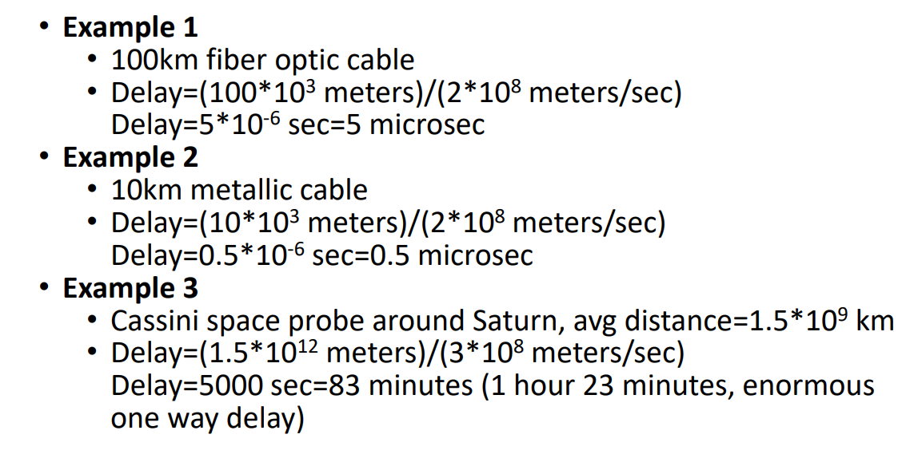
++++++++++++++++++++++++++++++++++++++++++++++++++++++++++++++++++++++++
Bölüm 1 - Yazılım Testinin Temelleri
Yazılım Geliştirme Yaşam Döngüsü(SDLC)
Yazılım projesinin geliştirilmesi sadece kodlamaktan oluşmaz, yazılım projesindeki tüm evreleri içeren bir süreçtir. Basit bir şekilde proje geliştirirken proje, planlama, analiz, geliştirme, test ve bakım evrelerini içermelidir. Bu model, projenin nasıl kodlanıp, geliştirileceğini açıklar.
- Planlama = Proje ile ne basarmak istiyoruz?
- İhtiyaçların belirlenmesi.
- Uygulanabilirlik çalışması.
- Planın oluşturulması.
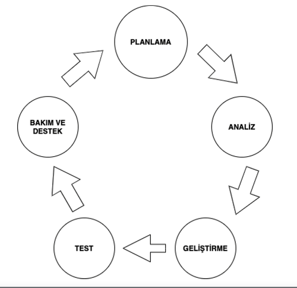
- Analiz = Proje ile istediğimiz noktaya nasıl gelinir?
- Detaylı analiz yapılır.
- Süreç diyagramları oluşturulur.
- Yazılım mimarisinin nasıl yapılacağının oluşturulmasıdır.
- Telafisi zor ve masraflı.
- Geliştirme = Yazılım süreci başlangıcı
- Altyapı oluşumu.
- Kod yazılımı.
- Uygulama kullanılmaya başlanmıştır.
- Test = Yazılım istediğimiz noktada mı?
- Test uzmanlarının görevi, yazılımdan beklenen sonuca ulaşabildiğini kontrol eder.
- Test adımları oluşturulması.
- Testlerin koşulması.
- Testlerin sistematik olarak yapılması.
- Uygulama tamamlanmış ve son kullanıcıya sunulmuştur.
- Geri bildirimlerin toplanması ve üzerine hataların düzeltilmesi.
Yazılım Test Uzmanının Sorumlulukları
Yazılım geliştirme yaşam döngüsünün her aşamasında yazılım test uzmanı etkin bir rol alır ve uygulamanın kaliteli bir şekilde son kullanıcıya ulaştırmasını sağlar.
Planlama
- Test edilecek alanlar, hangi ortamda, hangi cihazlar, nerelerin test edileceği planlar ve test planı oluşturur.
- amaç, hedef ve sonuç.
Tanımlama
- Adımların tasarlanması.
- Adımların Yazılması.
Test Koşumu
- Test adımlarının koşulması
- +Koşula göre beklenen sonucu verip vermediğini kontrol etme.
- Örn: Girdi sadece rakam ise, harf girilememesi.
- +Önem sırası vardır, öncelikte önem sırası yüksek (High Priority) testler koşulmalıdır.
Testin tamamlanması
- Test adımları tamamlandı.
- Tüm yüksek öncelikli hatalar çözüme kavuştu.
- Ürünümüz kullanıcı karşısına çıkmaya hazırlandı.
Yazılım Hata Raporlaması ve Hata Yaşam Döngüsü
Hata Raporlaması
- BUG kısaca yazılım ile ilgili çıkan hatalara denir.
- Test Uzmanları, bugları projede en erken zamanda tespit edilip çözülmesini amaçlar.
Hata (Bug) Türleri
3 tür hata (bug) türü vardır bunlar:
Görsel Hatalar
- Kesilmiş görüntüler, hizalama sorunları.
Fonksiyonel
- Kullanıcının bir sonraki sayfaya geçememesi.
Performans (Performans veya otomasyon test uzmanları tarafından koşulur)
- Sitenin açılmasının uzun sürmesi
Nasıl Rapor Yazılır?
- Raporlamadan önce yazilimci ile tartışılmalı ve bilgi sahibi olunmalı.
- Basit ve kolay anlaşılır olmalı
- Kısa ve anlaşılır Açıklama
- Adım adım hataya ulaşma
- Aldığımız sonuç
- İstediğimiz sonuç
- Öncelik belirtiliyor.
Basit Bir Hata Rapor Yazımı Örneği
Description
Mobil banka uygulamasında hesaplar arası para transferi gerçekleştirilemiyor.
Hata Adımları
- Banka uygulamasına aktif kullanıcı hesabı ile giriş yap.
- Ana menüden hesaplarım sekmesini seç.
- Para transferini seçip, hesaplarım arasında tuşuna bas.
- 2 hesap arasında para transferi gerçekleştir
Gerçekleşen Sonuç
Hesaplar arasında para transferi yapılırken uygulama hata verdi.
Beklenen Sonuç
Uygulama sorunsuz bir şekilde hata vermeden hesaplar arasında para transferi gerçekleştirebilir.
Hata Yaşam Döngüsü (Bug Life Cycle)
Bir hatanın açılışından kapanışına kadar geçirdiği evrelerdir. Projede oluşan hatalara sistematik bir şekilde yaklaşılmalıdır ve bu durumu rahatlıkla kontrol altına alınabilmesi için hata yaşam döngüsü oluşturulmalıdır.
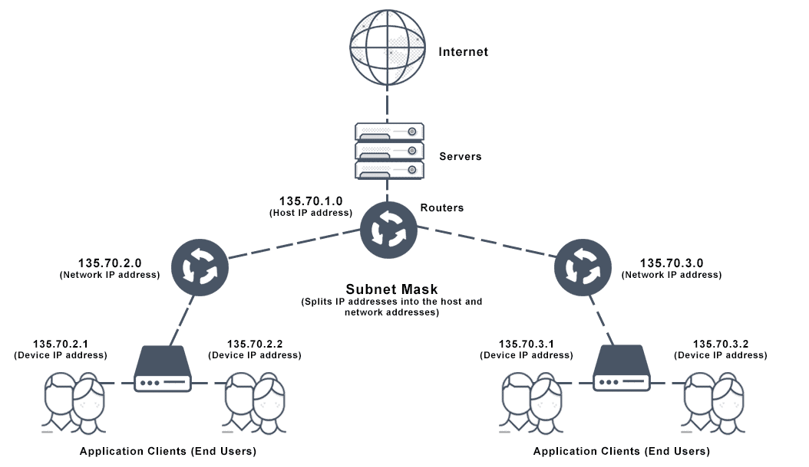
- New: Hatanın ilk kez girişi yapılması.
- Assigned: Test uzmanının hatanın var olduğunu onayladıktan ve bildirdikten sonra yazılımcılara atanması
- Open: Yazılımcıların analiz yaptığı ve hatayı düzeltmeye çalıştığı evre.
- Fixed: Yazılımcının hatayı düzeltme amacıyla yaptığı kod değişiklikleri sonrası bug durumunu “Fixed” olarak değiştirip, tekrardan test uzmanlarına yolladığı evre.
- Pending Retest: Değiştirilmiş kod parçasının, test uzmanına gönderilmesi
- Retest: Test uzmanının değiştirilmiş kod üzerinde, hatanın düzeldiğini kontrol ettiği evre.
- Verified: Testler sonucunda eğer hata yazılım üzerinde bir sorun yaratmazsa, hatanın statüsünü onaylandı(verified) olarak değiştirir.
- Reopen: Eğer testler sonucu hata hala varsa, test uzmanı hatanın statüsünü “reopened” olarak değiştirir ve hata tekrardan “Bug Life Cycle” döngüsünü tekrardan yaşar.
- Closed: Bug düzeltilmesi sonucu, eğer yazılımda daha fazla sorun yaratmıyorsa statü durumu “closed” olarak değiştirilir ve bunun sonucunda bug düzeltilmiş, test edilmiş ve onaylanmış olur
https://tryqa.com/what-is-a-defect-life-cycle/
Yazılım Gereksinim Analizi
İstenilen ürünlerin, beklentilerinin açıkça ifade edilmesidir.
- Genellikle İş analistleri ya da Product Owner tarafından oluşturulur.
- İşlevsel ve işlevsel olmayan gereksinimleri içerir.
- Müşterinin ne beklenildiği öğrenilir
- Döküman haline gelir (Büyük önemi vardır.)
- Yazılım uzmanları kodlar
- Test uzmanları dökümana göre test eder
Örnek yazılım gereksinimi
- Kullanıcı hesapları arasında para transferi gerçekleştirebilir.
- Kullanıcı farklı hesaplara para transferi gerçekleştirebilir.
- Kullanıcı hesabına farklı kullanıcılar tarafından para transferi gerçekleştirebilir.
- Kullanıcı önceki transferler içerisinde arama yapabilir
Hata Çözme Maliyeti Artma sırası
- Gereksinim->Kodlama->Kod Testi->Kabul Testi->Canlı Ortam
Test Senaryosu (Test Case) ve Test Kontrol Listesi (Checklist):
Test Senaryosu
- Test Açıklaması
- Test Adımları
- Ön Şartlar
- Test Datası
- Beklenen Sonuç
- Öncelik
- Test Koşum Ortamları
Test Senaryosu Örneği:
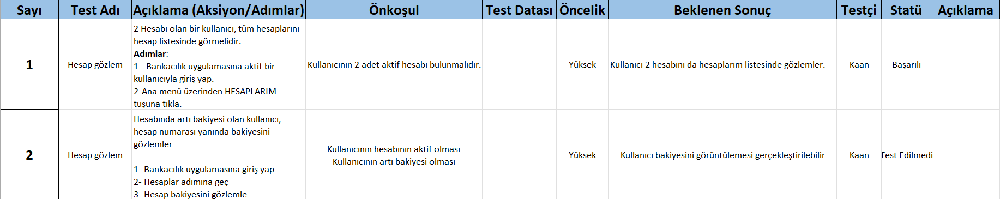
- Tecrübeye dayalı bir test tasarım tekniğidir.
- Test uzmanı, yazılımı doğrulamak için genel bir liste kullanır.
- Sadece Ana adımları içerir.
- Açıklama ve Statü içerir. (Genel Fonksiyonlarını bir liste olarak açıklar.)
Test Kontrol Listesi Örneği:
Statü durumu, başarılı, başarısız, test edilmedi ve atlandı olarak seçenekleri vardır.
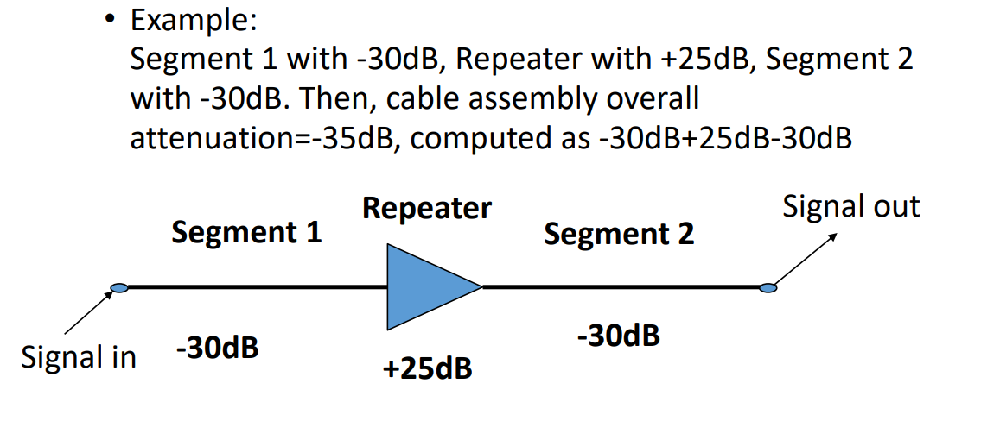
- Senaryo ve Kontrol Listesi Farkları
- -Büyük bir ekip ve diğer kişilerin takip etmesinin zor olduğu durumlar
- -Genellikle daha az tecrübeli test uzmanı varsa
- -Detaylı dökümantasyonun önemli olduğu firmalarda
- -Küçük Ekip
- -Tecrübeli test uzmanları
- -Birebir çalışma ve iş birliği içerisinde ise
- -Detaylı dökümantasyon önemli değilse
Bölüm 2 - Yazılım Test Metodları
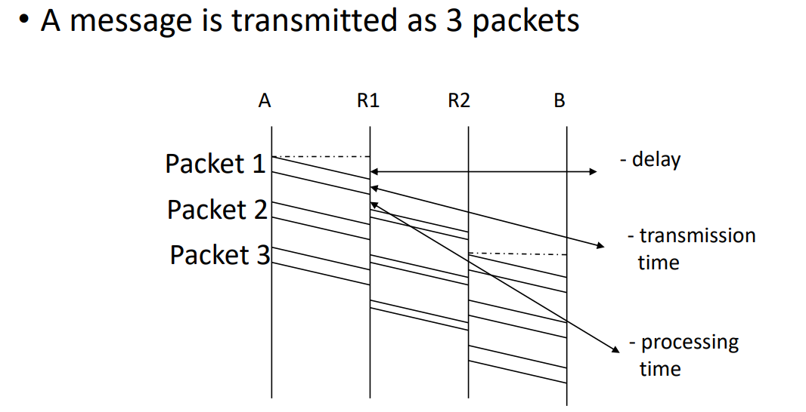
Yazılım Test Seviyeleri
Birim Testleri
- Her bir bileşenin gereksinimini yerine getirme, işlevsellik açısından doğruluğuna bakılır.
- Hata riskinin azaltılması.
- Fonksiyonel veya fonksiyonel olmayan hataları yakalamak.
- Hataların bulunması ve daha üst seviyelere geçmesinin önlenmesi.
- Ortaya çıkan hatalar kayıt altına alınmadan düzeltilir.
Entegrasyon Testleri
- Birimler veya sistemler arasındaki etkileşimlere odaklanılır.
- Sistemin işleyişi değil, diğer sistemlerle nasıl entegre olduğuna bakılır.
- Birim ve Sistem entegrasyonları olarak ikiye ayrılır.
- Riskin Azaltılması
- Arayüz kalitesine güven oluşması
- Veri uyuşmazlığı, arayüz hataları ve sistem arası iletişim hataları
Otomatize kullanıcı arayüz testleri
- Uygulamanın ön yüzünü kontrol eder.
- Yazılım daha fazla zaman alır ve sürekli bakım gerektirir.
- Bu aşamada hata maliyeti fazla olur
Sistem ve Kabul testleri
- Fonksiyonalite ve fonksiyonel olmayan davranışları ele alır.
- Sistemin tamamlandığının ve beklendiği gibi çalışacağının sağlanmasına bakılır.
- Sistemin kalitesinin güveni
- Hataların canlıya çıkmasının önlemi
- Hatalı hesaplamalar
- Hatalı kontrol/veri akışı yakalanması
Kara Kutu (Black Box) ve Beyaz Kutu (White Box) Testleri
Kara Kutu Testi
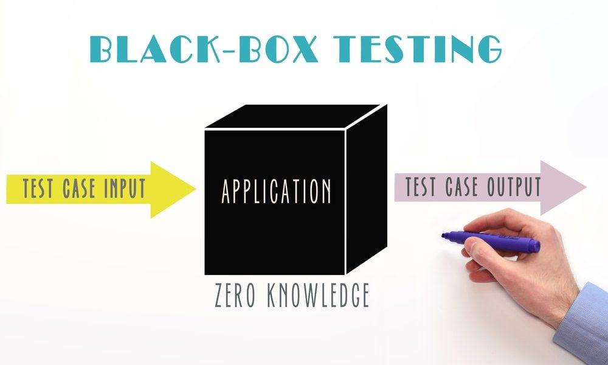
- Test uzmanı, kodun nasıl çalıştığını bilmeden, sadece girdi ve çıktılara göre sistemi test eder.
- Hatalı ve eksik Fonk.
- Ön yüz hataları
- Yazılımın davranışsal hatalarını
- Yazılımın başlama ve son bulma adımları
- Yazılım bir kullanıcı gibi kullanılıp, kodun nasıl çalıştığı dikkate alınmadan, kullanıcıyı etki edebilecek hatalar bulunur.
- İç çalışma mimarisi dikkate alınmadan,işlevselliği baz alıp test yapılır
- Test uzmanı sistemin nasıl çalıştığını kontrol eder
- Kullanıcı gereksinimleri baz alınır.
- Sistem testidir
- Uygulamanın davranışsal akışlarını içerir
- Duman testi, Regresyon Testi gibi testleri kapsar
- Fonksiyonel olmayan testler
- Bir bileşen veya sistemin fonksiyonalitesi ile ilgili olmayan testlerdir.
- Sistemin nasıl cevap verdiği bakılır
- Kullanıcı beklentisi baz alınır
- Sistem testidir
- Uygulamanın performansını kontrol eder
- Yük testi, performans testi, güvenlik testi gibi testleri kapsar.
Beyaz kutu Testi
- Uygulamanın nasıl çalıştığı ve kod yapısı, test uzmanı tarafından bilinir.
- Arka planda nasıl çalıştığı, hangi arayüzlere gönderildiği bilinir ve ona göre çalışılır.
- Birim Testleri
- Komut kapsamı testleri
- Dal kapsamı testleri
- Yol kapsamı testleri **Kapsam teknikleri koda bağlıdır**
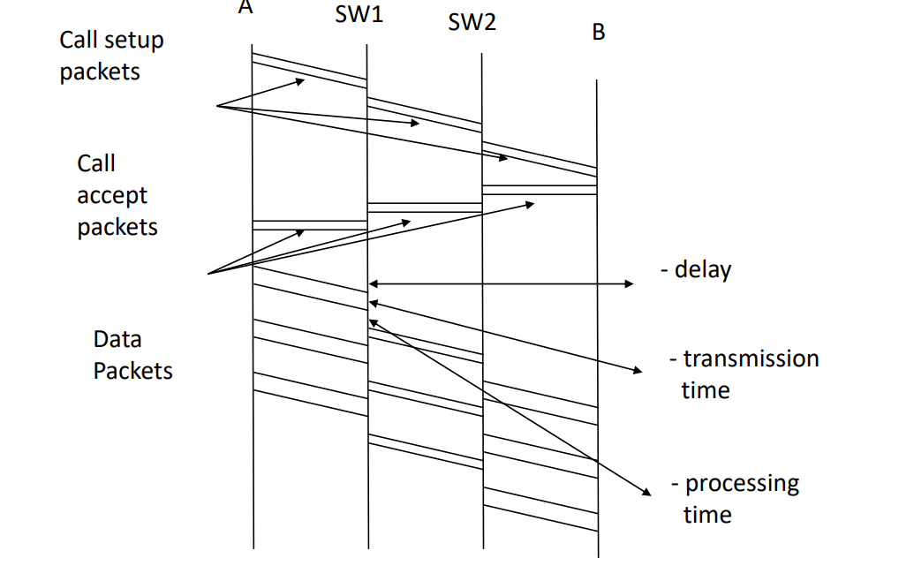
Kara Kutu (Black Box) Test Teknikleri:
- Detaylı kod yapısı bilinmeden, input ve outputların kontrol edilmesidir.
- Girdi verilerini paylara ayırıp, test adımlarını minimize eder.
- Hem geçerli hem geçersiz değerler vardır.
- Geçerli değerler, yazılım tarafından kabul edilmesi beklenen değerler
- Geçersiz değerler, yazılım tarafından reddedilmesi edilmesi beklenen değerler
- Tüm değerleri denemek zaman kaybı olacağından, test kapsamını en üst seviyeye çıkartmak için “Equivalence Partitioning” tekniği kullanılır.
- Örn: Bankadan para çekme davranışını test edeceğiz, 1 ve 500 arasında olan değerler geçerli sayılır. 500’den büyük ve 1’den küçük değerler geçersiz kabul edilir.
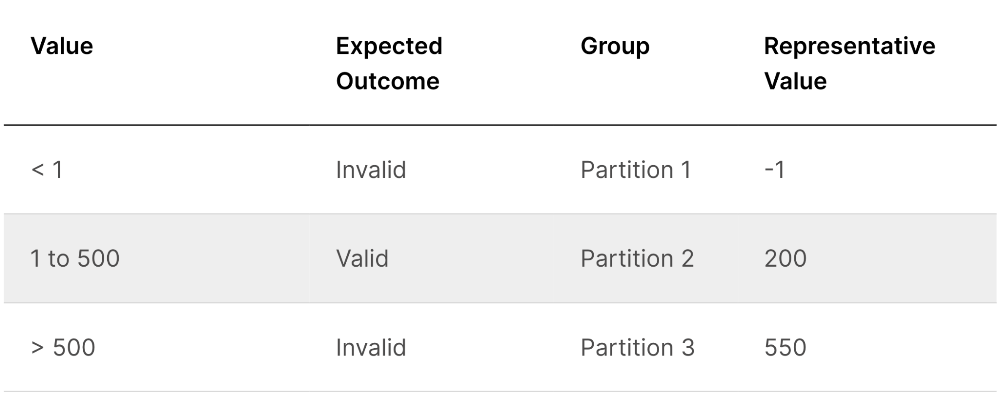
- Sınır değer analizi, iş gereksinimi, test adımları.
- Sınırların bir büyük ve bir küçük değerleri.
- Kabul edilebilir sınırlar, 1 ve 500
- Kabul edilemez sınırlar, 0 ve 501
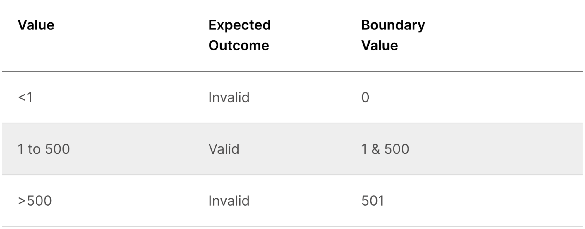 *Fazladan gereksiz test oluşturmak yerine, bu yöntem test uzmanlarına zaman kazandırır.
- Farklı test koşulları kombinasyonlarının nasıl farklı sonuçlar verdiğini test etmek.
- Koşullar ve beklenen sonuç belirlenir, onlara göre adımlar eklenir, ve tablo oluşur.
- Tabloya(adımlar) göre test senaryoları belirlenir, ona göre hareket alınır.
***Test senaryosu sayısı, koşul ile doğru orantılıdır, kaç senaryo olduğunu;
2 = 2^n, Örn: 3 koşul var ise, test adım sayısı=> (2^3) = 8.
- Bird Eats Bug uygulamasında (BEB) indirim ve Jira entegrasyon erişiminin nasıl test edileceğini analiz edeceğiz. BEB'de 2 tür abonelik vardır: Ücretsiz Plan ve Ücretli Plan. Ücretli Plan için, ekibe eklenen üye sayısına bağlı olarak, bir kullanıcı abonelikte farklı indirim yüzdeleri alacaktır.
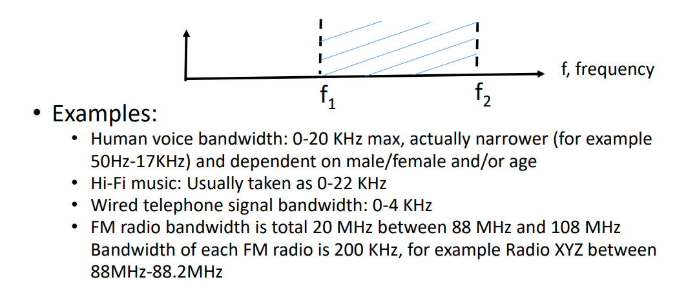
- Bu tabloya göre oluşabilecek test senaryoları:
- Ücretsiz Plandaki kullanıcı %0 indirim alır ve Jira Entegrasyonuna erişimi olmaz.
- Kullanıcı Ücretli Plandadır ve 5'ten az üyesi vardır: %0 indirim alır ve Jira Entegrasyonuna erişebilir.
- Kullanıcı Ücretli Plandadır ve 5 ila 10 üyesi vardır: %10 indirim alır ve Jira Entegrasyonuna erişebilir.
- Ücretli Planda olan ve 10'dan fazla üyesi olan kullanıcı %15 indirim alacak ve Jira Entegrasyonuna erişilebilecektir.
- Yazılımın arasındaki geçişleri gösterir
- Geçiş durumları grafik şeklinde(state diagram), yazılır ve durumlar incelenir.
- N-Switch testing, N artı 1 geçişleri çalıştırmak için tasarlanmıştır. (??)
- Örn: BEB uygulaması için Ücretsiz Plandan Ücretli Plana yükseltme yolunu inceleyeceğiz. Yükseltmek için kullanıcının ödeme bilgilerini girmesi ve yükselt tuşuna tıklaması gerekir. Ödeme bilgilerinin geçersiz olması durumunda kullanıcının yükseltme için iki deneme hakkı vardır. İki denemeden sonra, kullanıcının yardım için destek ekibiyle iletişime geçmesi gerekir. Ödeme bilgileri birinci veya ikinci denemede geçerliyse, kullanıcı başarılı bir şekilde yükseltme yapabilir.
State Transition Diagram:
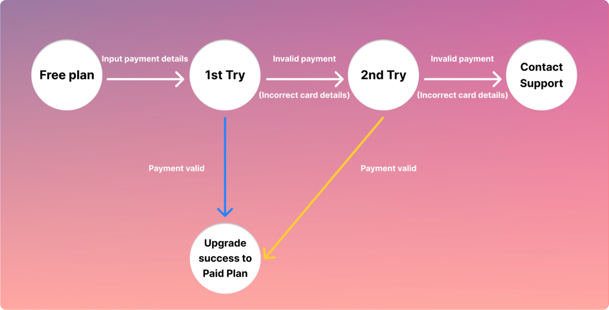
- Bu diagramda, state yuvarlak, transitions oklar halinde çizilmiştir. Oluşabilecek test senaryoları:
- Kullanıcı ilk kez doğru ödeme bilgilerini girer ve ardından Ücretli Plana başarıyla geçebilir.
- Kullanıcı ilk seferde geçersiz ödeme bilgilerini girer ve ikinci seferde geçerli ödeme bilgileriyle dener. Kullanıcı daha sonra planı yükseltebilir.
- Kullanıcı her iki denemede de geçersiz ödeme bilgilerini girer. Kullanıcı daha sonra Destekle İletişime Geçin sayfasına yönlendirilir.
- Farklı profildeki kullanıcıların yazılımla etkileşimleri modellemek için faydalanılan senaryolardan elde edilebilir.
- Kullanıcılar, sistem ve yazılımla ilişkilidir.
- Kullanım durumu açıklaması: Bir kullanıcı çevrimiçi yemek sipariş edebilir.
- Sistem: Online Yemek Teslimatı Uygulaması.
- Ön koşul: Kullanıcının geçerli kimlik bilgileriyle sisteme çevrimiçi olarak erişmesi gerekir.
- Birincil aktör: Online yemek siparişi veren ve ödeme yapan müşteri.
- Temel akış veya ana senaryo: Müşteri mevcut restoran seçeneklerini keşfedebilir ve uygunluk ve yemek tercihlerine göre sipariş verebilir. Olası kullanım durumu, yemek teslimatı uygulamasını kullanarak etkileşime giren bir müşteri ve restoran çalışanı olabilir.
- Beklenen akış: Her iterasyonun beklenen sonuçları da izlenebilir. Bu, geliştirme ekiplerinin kodlama gereksinimlerini çok daha iyi bir şekilde yürütebilmeleri için genel sistem işlevlerini anlamalarına yardımcı olur.
- Koşul sonrası: Sistem, yapılan ödemelerle birlikte sipariş detaylarının bildirimini gönderir.
Bölüm 3 - İleri Seviye Yazılım Test Teknikleri
Negatif Testler (Negative Testing):
- Bileşen veya sistemin çalışmadığı noktaları göstermeyi amaçlar
- Adımlar hazırlanırken, sadece olumlu değil, negatif sonuçlara da bakılır.
- Örn: "Alan sadece pozitif sayı kabul ediyor."
- Negatif test case senaryosu:
- Alana Herhangi bir harf girilir ve tuşa basılır.
- Alana negatif bir sayı girilir ve tuşa basılır.
||Yazılım testlerinde *Pozitif* ve *Negatif* olmak üzere 2 ana strateji vardır.||
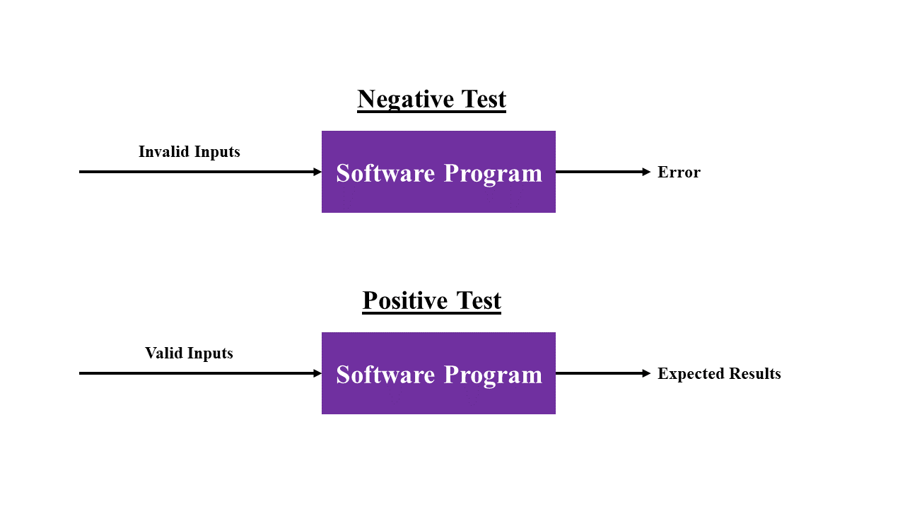
Pozitif Testler:
- Amaç, uygulamanın beklenildiği gibi çalışmasını kontrol etmektir.
Negatif testler:
- Amaç, kullanıcının yapabileceği hataları da düşünüp, test adımları oluşturulmalı.
- Negatif testlerde, kullanıcının normal kullanım haricinde neler yapabileceği kontrol edilmeye çalışılır.
- Uygulama kalitesi bakımından, negatif testlerin yapılması önem taşır.
Genel negatif senaryosu örn:
- Veri girişi alanlarına farklı değer girmek
- Bazı alanlara veri girişi zorunluluğu vardır, bu alanlara veri girişi yapmadan ve hatalı veriler ile devam etmeye çalışılır.
- Veri girişi alanları maksimum değerleri
- alanlara beklenenin dışında, çok büyük veya çok küçük değerler girilen test senaryoları
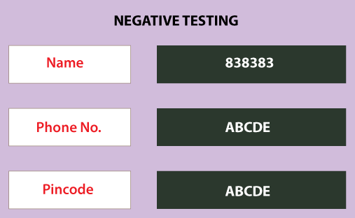
Duman ve Mantıklılık Testleri (Smoke and Sanity Testing)
Smoke (Duman) Testing:
- Bir uygulamanın en önemli fonksiyonlarının çalışma durumuna, detaylara girmeden yapılan testlerdir.
- Yeni sürümün yayınlanması için kritik rol oynar.
- Maliyeti düşük bir testtir.
- Test koşusundan önce, basit bir *kontrol-listesi* hazırlanmalıdır.
Sanity (Mantıklılık) Testing:
- Yeni uygulama sürümünde hata çözümü sonrası, sadece kod değişimi yapılan kısım kontrol edilir.
- Eğer test başarısız ise, sürümün daha fazla teste ihtiyacı yoktur, reddedilir.
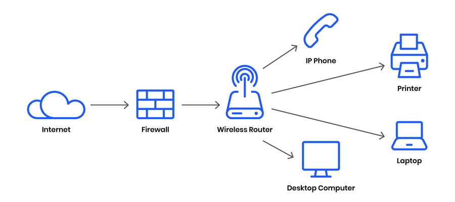
Regresyon Testleri (Regression Testing)
- Yazılım üzerinde yapılan herhangi bir değişiklik sonucu, diğer bölümlerde etkisinin olup olmadığına bakılır.
- Canlıda çalışan kodun üzerinde yapılan değişikliklerin kontrolü için kullanılır.
- Sürekli yapılır.
- Yeni sürüm yayınlanmadan önce, uygulamanın tüm alanlarının test edilmesi.
- Öncelikli amacı, uygulamanın kritik alanlarının beklenildiği gibi çalışmasına bakar.
- Daha önce çıkan hataların düzeltildiğinin kontrolü.
Regresyon test adımı seçimi sırasında dikkat edilmesi gerekenler:
- Kullanıcıların yoğun olarak kullanıldığı alanlar.
- Hata çıkan uygulama alanları.
- Ana fonksiyonlar.
- Yüksek karmaşık fonksiyonlar.
- Son değişikliğin yapıldığı alanlar.
- Önemli entegrasyonlar.
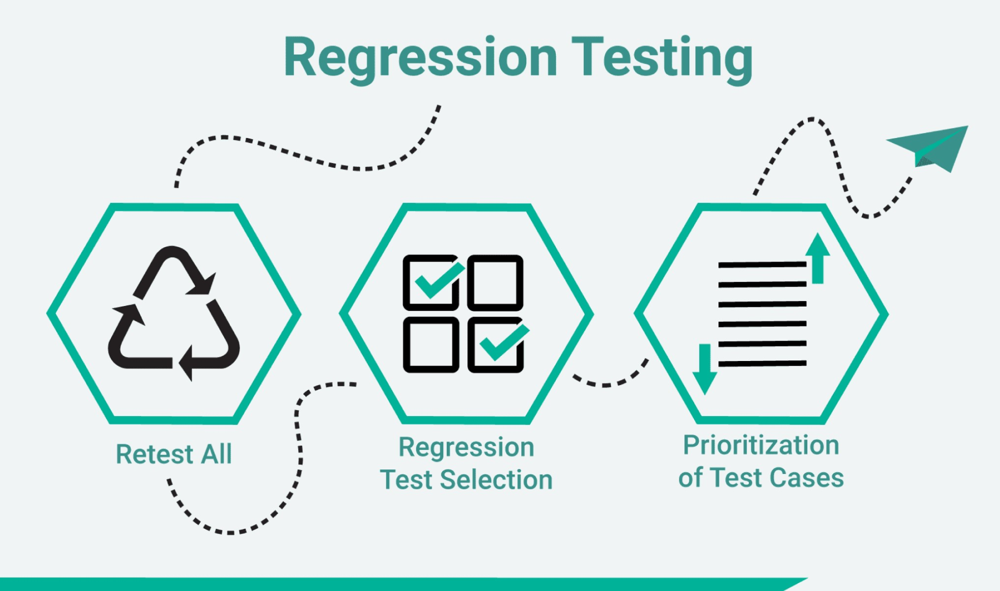
Risk Bazlı Testler
- Test senaryolarını önceliklendirir.
- Risk seviyesi, olayın olasılığına ve etkisine göre belirlenir.
Ürün Risk Örnekleri:
- Yazılım, amaçlanan fonksiyonları yerine getirmeyebilir.
- Sistem mimarisi, gereksinimlere uygun desteklemeyebilir.
- İşlemin yanıt süreleri yetersiz olabilir.
- Kullanıcı geri bildirimleri, ürün beklentisini karşılamayabilir.
Proje Risk Örnekleri:
- Teslimatta, çıkış kriterlerinin karşılanmasında gecikmeler olabilir.
- Geç yapılan değişiklikler önemli ölçüde yeniden yapılması gereken işlere neden olabilir.
- Gereksinimler yeterince iyi tanımlanmamış olabilir.
- Test ortamı zamında hazır olamayabilir.
- Proje riskleri, hem test hem de yazılım geliştirme faaliyetlerini etkileyebilir.
Yazılım testinde risk:
- Kullanıcının karşılaşmaması gereken bir durum ile karşılaşmasıdır.
- Risk = Etki x Olma olasılığı
|| Öncelik sırası ||
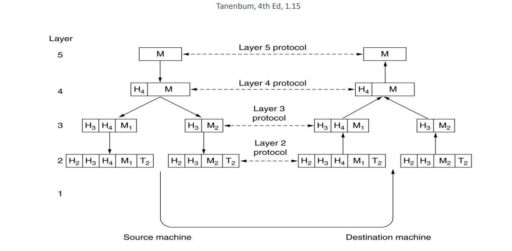
- Riskli bölgeler belirlenmeli ve test adımları ona göre önceliklendirilmelidir.
- Uygulama testi için çok zaman yoksa, sadece risk ortalaması yüksek olanların koşullandırılması, riski en aza indirir.
Statik Testler
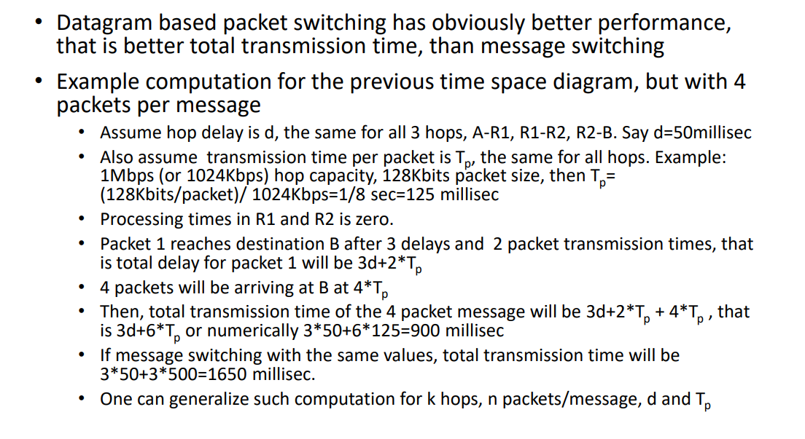
- Kod çalıştırılmadan yazılım ürünü değerlendirilir.
- Yazılım geliştirme yaşam döngüsünün erken zamanında, statik testler kullanılmalıdır. Hataların erkenden bulunmasını sağlar.
- İş gereksinimi ve analizi, Üst düzey tasarım, Detaylı tasarım, geliştirme sırasıyla Statik Testler kullanılabilir.
- Kullanıcı Kabul Test kısmında "Statik Test" kullanılmaz.
- Hataların neden olduğu arızaları bulmak yerine, hataları çalıştırmadan bulur.
- Resmi Gözden Geçirme Adımları:
- Planlama.
- Gözden geçirmenin başlatılması.
- Bireysel gözden geçirmeni.
- Bulguların iletilmesi ve analizi.
- Hataların giderilmesi ve raporlama.
- Hatanın olabildiğince erken bulunup düzeltilmesi.
- Testlerin maliyetinin ve harcanan zamanın azaltılması.
- Yazılımın gelişmesi ve verimliliğinin artması.
- Yazılımın ileri seviyelerinde hata ortaya çıkma oranının azaltılması.
Test Planlaması ve Tahminlemesi
- Hangi alan test edilecek? , Nasıl test edilecek? , Ne kadar zaman harcanacak? soruları yanıtlanmalıdır
- Testlerin kapsamı, hedefleri ve risklerin belirlenmesi
Giriş ve çıkış kriterleri:
- Giriş kriterleri, belirli bir test faaliyetinin gerçekleştirilmesi için gereken ön koşul.
- Çıkış kriterleri, test seviyesi veya test grubunun tamamlandı olması için hangi koşullardan geçmesi gerektiğini tanımlar.
Test Eforu Tahminlemesi:
- Mümkün olduğunca projenin ön safhalarında gerçekleştirilmeli.
- Çevik proje yönetiminde, complexity olarak ele alınmıştır.
- Bu Tahminlemeye "Scrum Pokeri" denir.
- Fibonacci serisine göre puanlama yapılır, 1 puan en basit, 13 ise çok karmaşık değişiklikler için kullanılır.
Yazılım ve Test Ortamları
- geliştirme => test => pre-cod => canlı
- Yazılımda yapılan ilk değişiklik.
- Statik testler için ideal bir ortamdır.
- Genellikle stabil ve sadece test için hazır kod olmalıdır.
- Ortamın stabil olması lazımdır.
- Canlı ortamın birebir kopyasıdır.
- Test uzmanları son kontrollerini gerçekleştirir.
Bölüm 4 - API (Uygulama Programlama Arayüzü) Testi
- En alttan üste, Veri Tabanı Katmanı => Uygulama Arayüzü Katmanı (API) => Kullanıcı Önyüz Katmanı
- Önyüz testlerinde, kullanıcı gibi kullanılır ve test edilir.
- Arayüz testlerinde, yazılımın işleyişi ve arayüzün işleme mantığı test edilir.
HTTP Metotları ve Kullanımları:
- HTTP, bir veri transferi methodudur, serverlar tarafından belirli kodlar ile cevap verilir.
- -- GET - POST - PUT - PATCH - DELETE --
- Get/Read = sadece okumak için kullanılır, serverdan gerekli bilgi okunur.
- Post/Create = Oluştur komutu gönderir, veri tabanı üzerinden bir kaynak oluşturur. Uygulama servera girilen bilgiler ile oluştur komutu gönderir ve kaydedilmesini sağlar.
- Put/Update = Halihazırda kaydedilmiş bilgiyi günceller.
- Delete = Kayıtlı verinin silinmesini sağlar, arayüze DELETE metodu gönderilir.
API Dokümantasyonu Okuma:
- Çağrının, hangi tür bir çağrı olduğu en başta, "Header" kısmında ne göndermemiz gerektiği, "Body" kısmında hangi alanların gönderilmesi gerektiğini görürüz.
- "2xx" dönerse hata yok, "4xx" veya "5xx" dönerse hata var.
API - Postman Örnekleri:
- https://restful-booker.herokuapp.com/apidoc/index.html
- Arayüzde bulunan bütün “Booking IDs” döndürür.
- Opsiyonel olarak bir query araması yapılabilir ve “Booking IDs” alt kümesi döndürebilir.
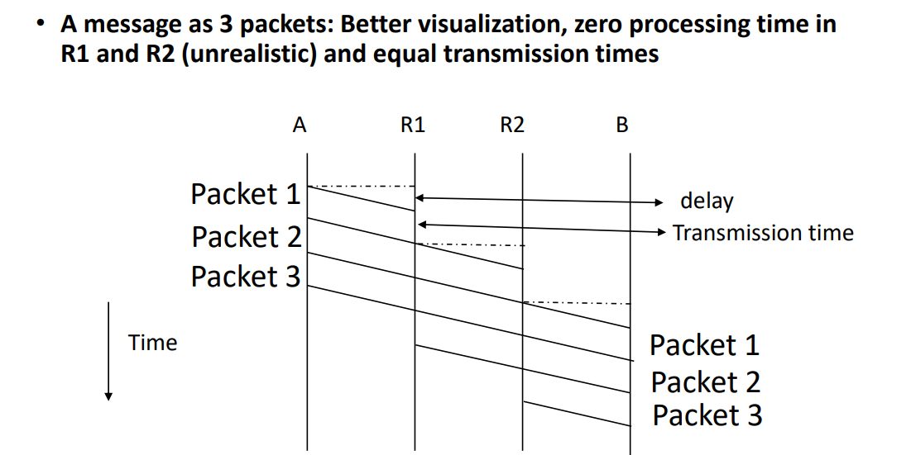
- Status “2xx” şeklinde geldiği için program sorunsuz çalıştı ve bütün “Booking IDs” döndürdü.
- Post/Create Komutu: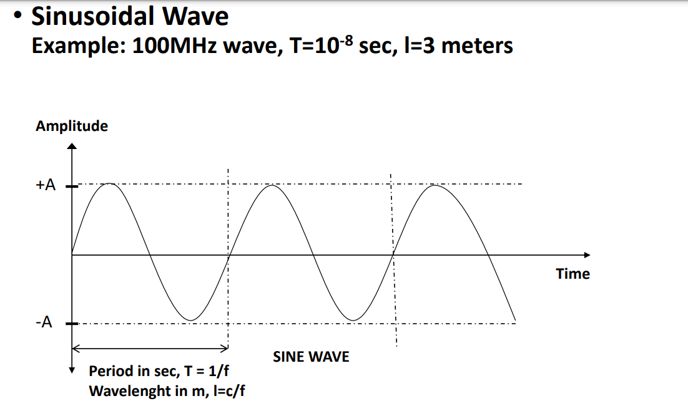
- İlk olarak json formatını kabul etmesi için “Headers” kısmına Content-Type olarak eklememiz lazım.
- 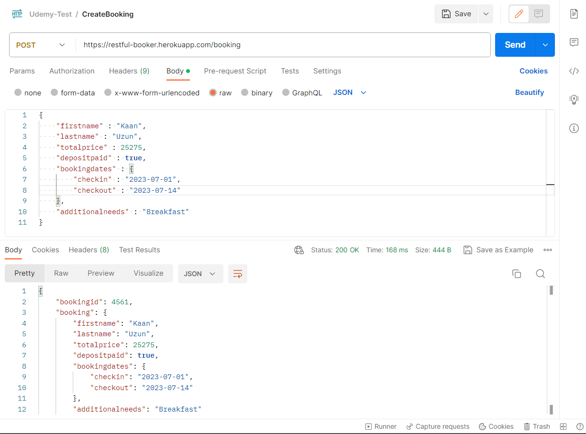
- Daha sonrasında “Body” kısmına dataya göre Json kodunu yazıp “Post/Create” komutuyla istediğimiz veriyi oluşturabiliyoruz.
- Status “2xx” olarak döndüğü için program sorunsuz bir şekilde çalışmış bulunmaktadır.
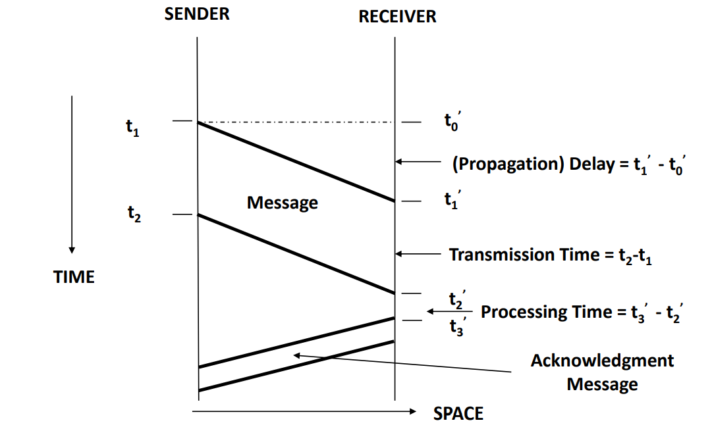
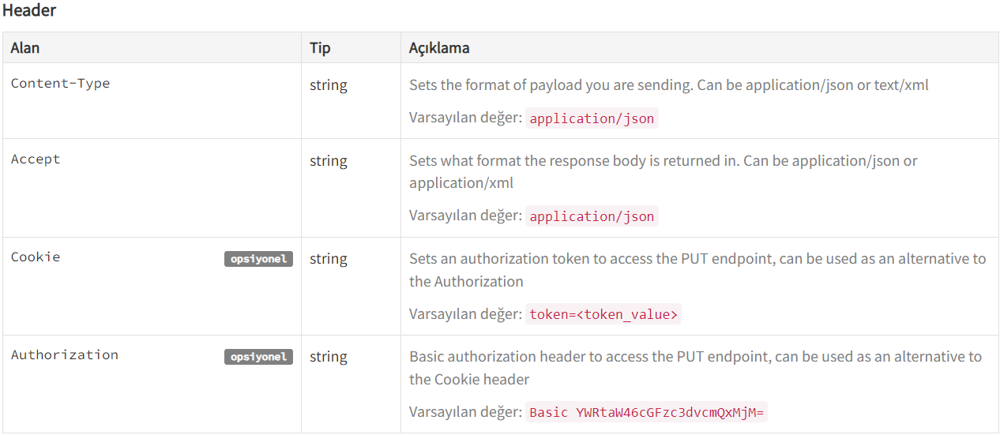
- Header olarak “Cookie” header kısmı opsiyonel olarak gösterilmesine rağmen, “Cookie” header olarak eklemezsek programı yolladığımızda program “4xx” statüsü ile geri dönüş yapar ve bu programda bir hata olduğunu gösterir.
- Bunun sonucunda “Cookie” header olarak opsiyonel olmadığını görürüz.
- “Cookie” header token istediği için, “Get/Create” komutu ile bir token oluşturup programa yollamamız lazım.
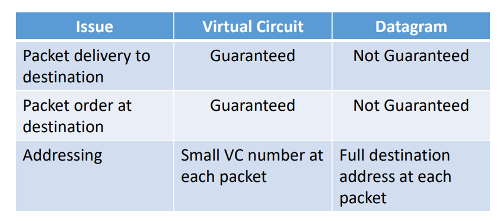
- Tokenlerin kullanım süresi bulunmaktadır, bazı tokenleri belli süre içerisinde birden fazla kullanılabilinirken bazı tokenler bir defa kullanılabilir ve tekrardan oluşturulması lazımdır.
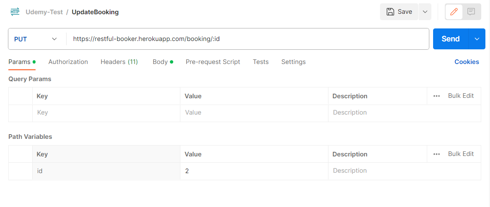
- Path Variables kısmında değiştirmek istediğimiz ID yazıp, body kısmından json kodu ile birlikte istediğimiz değişiklikleri yapıyoruz.
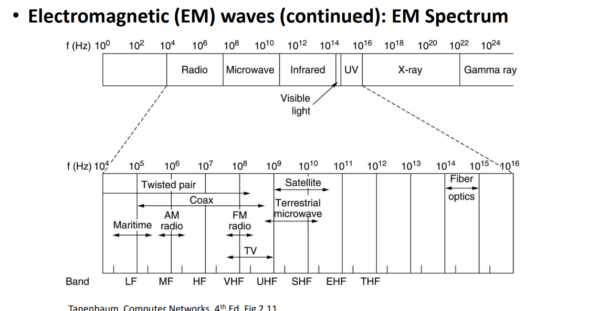
- Program statüsü “2xx” şeklinde döndüğü için program sorunsuz bir şekilde istediğimiz güncellemeyi veri tabanında yapmış bulunmaktadır.
- İstediğimiz bir veriyi tamamen değil, istediğimiz bölümlerinde değişiklik yapmamızı sağlar.
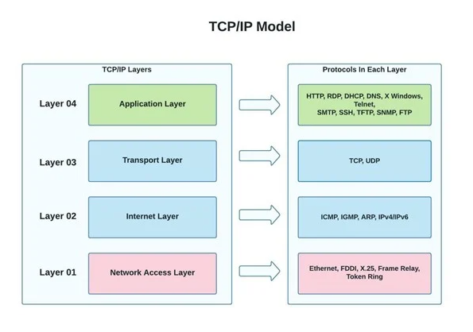
- Path variables kısmında değişiklik yapmak istediğimiz ID yazıyoruz.
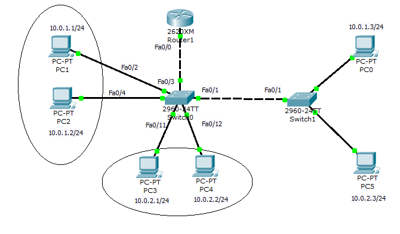
- Json kodu ile “Body” kısmına sadece yapmak istediğimiz değişikliği yazıyoruz ve veriyi gönderiyoruz.
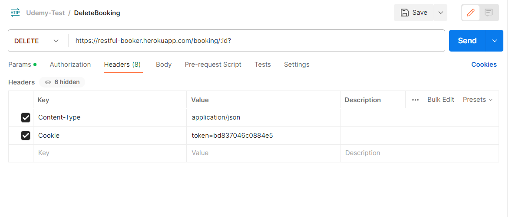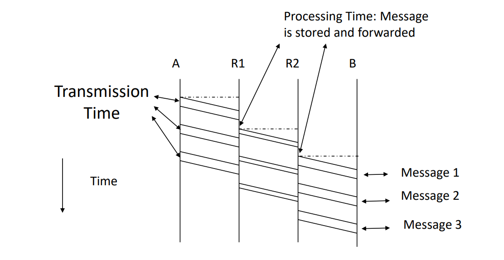
- Sadece “Path Variables” kısmına silmek istediğimiz ID yazıp veriyi yolluyoruz.
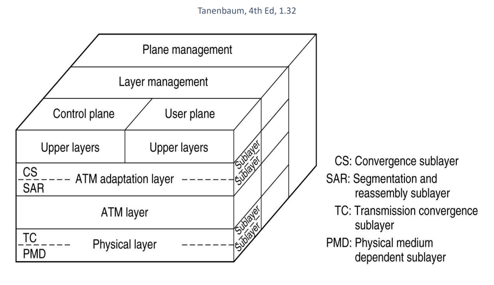
- Created olarak ve statu durumu “2xx” olduğundan verinin başarıyla silindiğini görüyoruz.
- Eğer “Get” komutuyla sildiğimiz ID için bir çağrı yaparsak, ID’nin bulunamadığını görürüz.
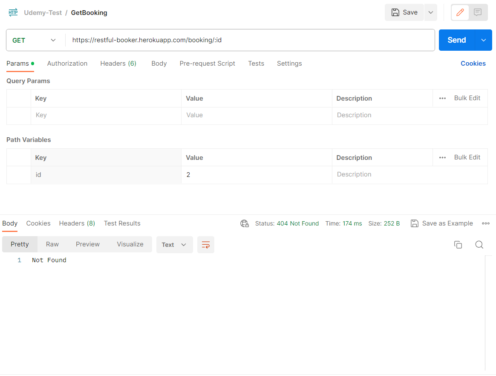
Web Uygulama Testleri
- Web uygulama testleri, bir web sitesinin belirli bir web browser üzerinde test edilmesidir.
- Web uygulama testlerini gerçekleştirmek complexity yüksek olmasından dolayı zorluğu vardır.
- Hangi tarayıcıda test yapılmalı?
- Hangi tarayıcı sürümünde test yapılmalı?
- Hangi ekran boyutu ve çözünürlüğü?
- İnternet hızı nasıl olmalı?
- Web uygulama testlerinde takip edilen uygulamalar:
- Kullanıcıyı tanımak, testlerden önce kullanıcı datalarına erişim varsa, en sık kullanılan cihazların, tarayıcıların, ekran çözünürlüklerinin listesi yapılarak test önceliği hazırlanmalıdır
- Uygulamaya geniş bir açıdan bakmak, test koşumu sırasında sadece basit kullanıcı adımları değil, kullanıcının yaşayabileceği durumları göz önünde bulundurmak.
- Çapraz tarayıcı testleri(Cross-browser testing), uygulamayı her zaman birden fazla tarayıcı ile test etmek lazım.
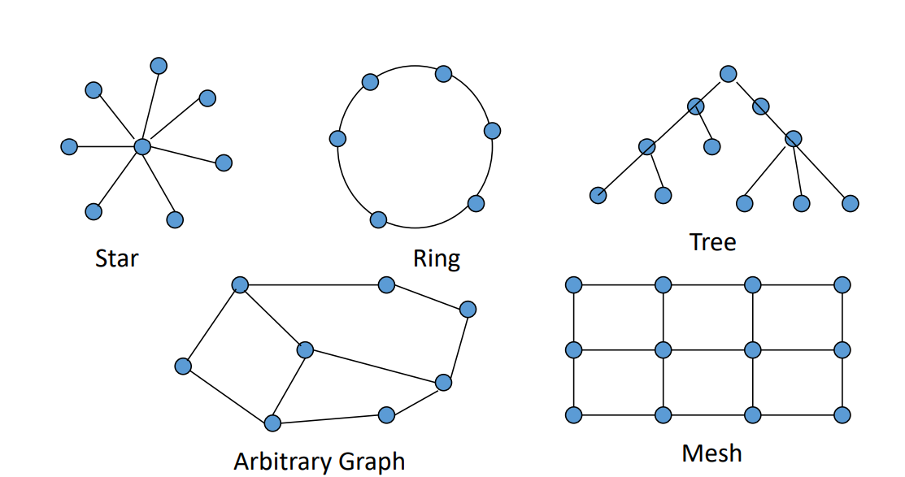
Bölüm 5 - SQL İle Veritabanı (Database) Testi
Veri tabanı temelleri ve test

- Veritabanları, birbirleri ile ilişkili olan verilerin depolandığı alanlardır.
- Verilerin boyutları, sınıflandırma ve arama zorluğu ile doğru orantılıdır.
- SQL ile yapabileceğimiz bazı işlemler:
- Veritabanları
- Tablolar oluşturmak
- Sorgular yürütmek
- Veritabanına, verileri:
- Almak
- Eklemek
- Güncellemek
- Silmek
- Modern uygulamaların çoğu verilerini saklamak için bir veritabanı kullanır.
- Test ortamında SQL, verilerin doğru şekilde depolayıp alıp almadığını test etmek için kullanılır.
- 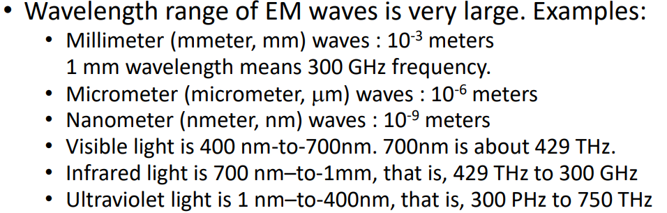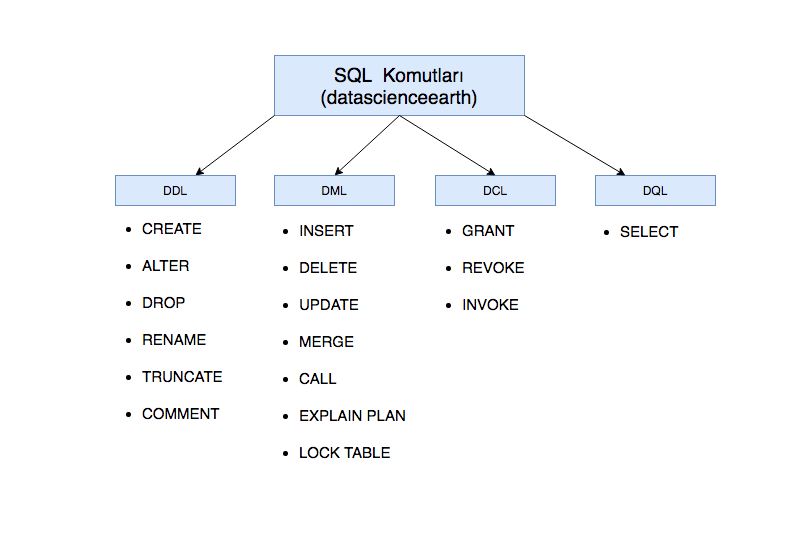
PgAdmin ve PostGreSql
- Çağrı yapabileceğimiz bir kullanıcı arayüzü.
- Verileri depolayan bir SQL veritabanıdır.
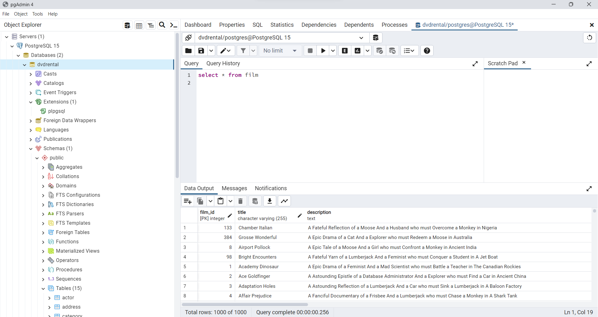
- Select * from …… = komutu ile ekrana istediğimiz yerde olan bütün verileri döndürebiliriz, “ * ” komutu hepsini içermektedir.
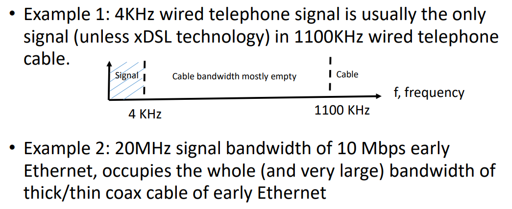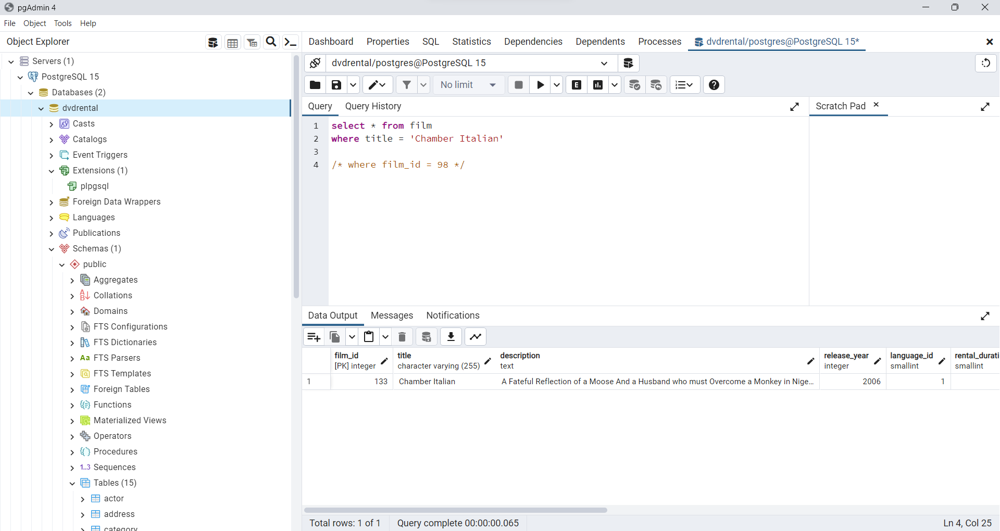
- “Select * from ……” komutu sonrasında “where ….. = ….” komutunu kullanıp, istediğimiz bir özellikte SQL sorgusunu filtreyebilir ve bu veriyi ekrana döndürebiliriz.
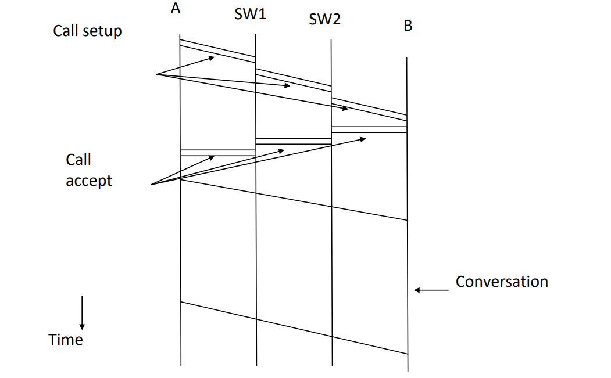
- “Order by ….. “asc / desc” komutu ile istediğimiz şekilde sonuçları sıralayabiliriz. “asc” yazarsak , küçükten büyüğe, “desc” yazarsak büyükten küçüğe bir sıralama yapmış oluruz.
Bölüm 6 - Mind Map ve Test Senaryosu
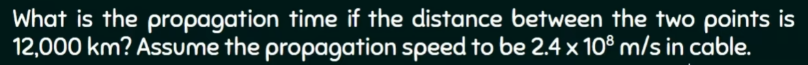
- Mind Map, bir fikrin veya konseptin grafiksel olarak anlatımıdır.
- Mind Map, baştan sona olan bütün test adımlarını yaratıcı ve mantıklı bir şekilde temsil etmesidir.
- Mind Map Nasıl oluşturulur?
- Ana fikir ortaya yazılır.
- Merkezi noktadan dallar yayılır, bu dallara çeşitli test aktiviteleri yazılır.
- Bu sayede dalların tamamlanması ve performans gösterilmesi için gereken aktiviler daha detaylı bir şekilde yazılır.
- Her bölüm için, kısa cümleler kullanılır, “critical tasks” ve “non-critical tasks” birbirinden ayırmak için renk kodlaması kullanılmalıdır.
- Daha iyi bir test planı yapılır, mind map çizilmesi, görevler yapılırken hangi sırayla, hangi aktiviteler birbirini etkiliyor, grup şeklinde yapılmasına görsellik katarak yardımcı olur.
- Testin takip edilebilmesi, gereksinimleri içerecek şekilde mind maps çizilebilir ve bu gereksinimler ilgili test senaryolarına bağlanabilir. Bu, yeterli test kapsamı sağlar ve ayrıca test sonuçlarını doğrulamayı kolaylaştırır.
- Test ilerlemesinin izlenmesi, mind maps, testlerin ilerleyişini izlemeyi ve projenin durumunu değerlendirmeyi kolaylaştırır.